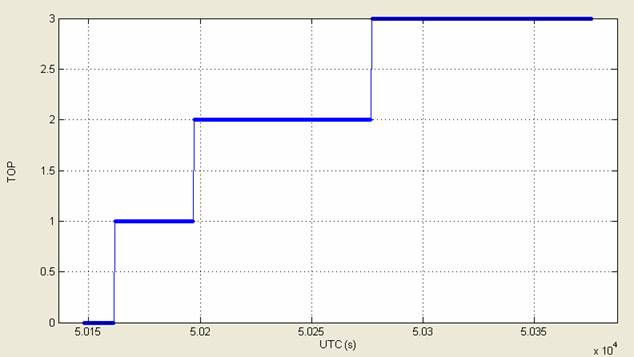
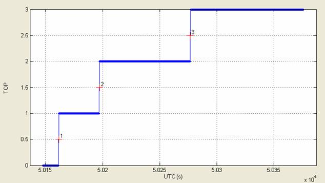
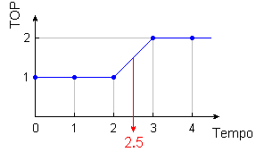
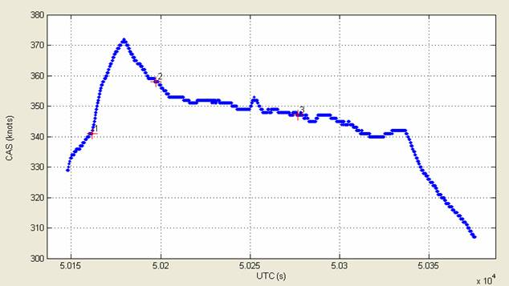
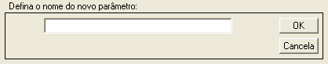
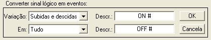
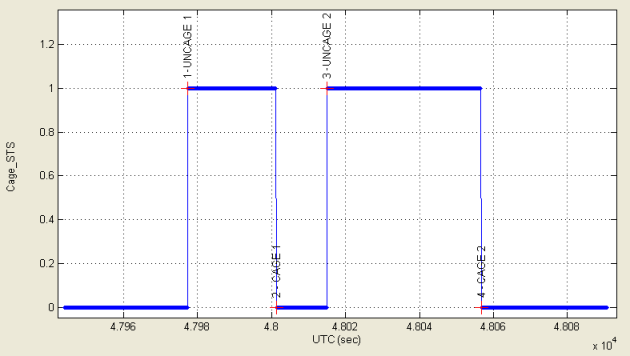
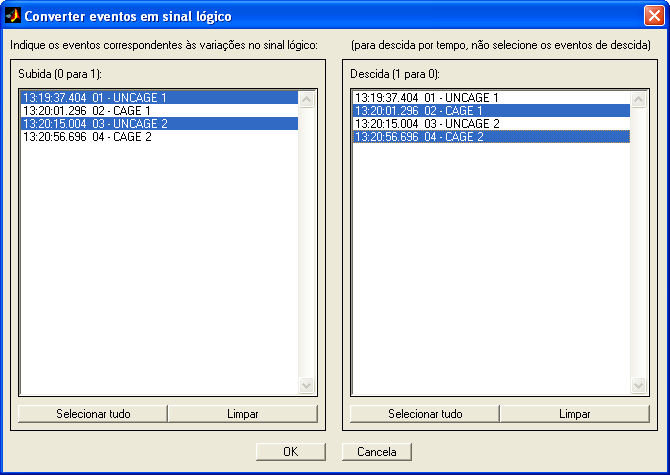
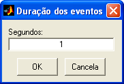

| Menu Ferramentas |
|
O R_DAT permite a realização conversões entre eventos e certos tipos de parâmetro, como TOPs e variáveis lógicas (0 ou 1), e vice-versa.
As conversões disponíveis são:.
- Converter TOPs
em Eventos
- Converter eventos em TOPs
- Converter sinal lógico em eventos
- Converter eventos em sinal lógico
Essa ferramenta
permite converter
um parâmetro de TOP em uma lista de eventos.
Clique no menu “Ferramentas ►
Gerenciamento
de eventos ... ► Converter ... ► TOPs
em
Eventos”.
O R_DAT irá procurar por parâmetros
de TOP na matriz de trabalho (parâmetros iniciados com “TOP”, “Event” ou “Mark”). Se forem
encontrados mais de um, o usuário deverá indicar o parâmetro a ser
convertido.
Esse parâmetro deve ser adequado, ou seja, ser composto por valores
naturais
crescentes.
Para a criação dos eventos, é necessário que o tempo de referência esteja definido, caso contrário o usuário será solicitado a cadastrá-lo.
Após a
definição do TOP e do tempo, esses parâmetros serão
apresentados no gráfico:

Como os TOPs
são numerados, é necessário descartar os eventos já existentes, pois
poderia
ocorrer conflito de numeração. Nesse caso, o R_DAT
informará o usuário que os eventos cadastrados serão perdidos e
questionará se
o usuário deseja continuar.
Ao confirmar a
operação, os tempos correspondentes aos TOPs serão obtidos e
uma lista de
eventos será criada. É possível verificar os eventos na ferramenta
de edição de eventos.

| Nota: O tempo exato
em que o TOP ocorreu não é conhecido. Sabe-se apenas que o mesmo
ocorreu entre as duas observações consecutivas que registraram sua
mudança de valor na instrumentação. Para efeito de correlação entre TOP
e tempo, o R_DAT assume
que o TOP ocorreu no ponto médio entre essas duas observações, como
mostrado na figura abaixo. |

Converter
Eventos em TOPs
Essa ferramenta
permite converter
a lista de eventos em um parâmetro de TOP.
Clique no menu “Ferramentas ►
Gerenciamento
de eventos ... ► Converter ... ► Eventos em TOPs”.

Será criada uma
trilha com mudanças de níveis nos tempos
correspondentes aos eventos, gerando um parâmetro de TOP. O usuário
deverá
fornecer o nome do novo parâmetro:

Após definir o
nome e clicar “OK”, o novo parâmetro será acrescentado
à penúltima posição das matrizes de trabalho (antes de “No.OBS.”).
Essa ferramenta permite converter as alterações de nível de um parâmetro de sinal lógico em uma lista de eventos.
Um
sinal lógico é um parâmetro composto de zeros e uns, geralmente
utilizados para registrar um estado de acionamento, como por exemplo o
gatilho ou o botão de soltura de armamento.
- Selecione em "y" o parâmetro lógico que deseja converter;
- Clique no menu “Ferramentas ►
Gerenciamento
de eventos ... ► Converter ... ► Sinal lógico em eventos”.
Para a criação dos eventos, é necessário que o tempo de referência esteja definido, caso contrário o usuário será solicitado a cadastrá-lo.
A Caixa de
Diálogo solicitará que o usuário indique as opções para conversão:

|
Opção |
Descrição |
|
Subidas |
Serão convertidos em eventos as "subidas" de sinal, ou seja, as variações de 0 para 1. |
|
Descidas |
Serão convertidos em eventos as "descidas" de sinal, ou seja, as variações de 1 para 0. |
|
Subidas e descidas |
Ambos os tipos de variação de sinal serão convertidos em eventos. |
|
Opção |
Descrição |
|
Tudo |
Em toda a
extensão do parâmetro. |
|
Intervalo |
Apenas no
intervalo selecionado (intervalo visível no gráfico). |
É possível numerar os eventos sequencialmente acrescentando-se o caractere " # " após a descrição dos eventos.
Exemplo: "UNCAGE #" fornecerá eventos "UNCAGE 1", "UNCAGE 2", etc.
Caso já haja eventos com a mesma descrição, a numeração será continuada do maior valor já cadastrado.

Converter
Eventos em Sinal Lógico
Essa ferramenta permite converter eventos em alterações de nível de um parâmetro de sinal lógico.
Um
sinal lógico é um parâmetro composto de zeros e uns, geralmente
utilizados para registrar um estado de acionamento, como por exemplo o
gatilho ou o botão de soltura de armamento.
Clique no menu “Ferramentas ►
Gerenciamento
de eventos ... ► Converter ... ► Eventos em sinal lógico”.
Uma janela permitirá ao usuário indicar os eventos para conversão:

Use as teclas "Ctrl" e "Shift" do teclado para selecionar múltiplos eventos.
Caso os eventos de desacionamento não sejam conhecidos, é possível informar o intervalo de duração dos eventos. Nesse caso, não selecione nenhum evento na lista da direita.
Ao pressionar "OK", informe a duração dos eventos em segundos:

Ao confirmar a operação, os eventos serão ordenados e será criado um novo parâmetro lógico (com valor 0 ou 1), variando conforme os tempos dos eventos de subida e descida selecionados.
O usuário deverá fornecer o nome do novo parâmetro:
Após definir o nome e pressionar “OK”, o
novo parâmetro será acrescentado à penúltima posição das matrizes de
trabalho
(antes de “No.OBS.”).
| |
Obter
dados dos eventos |
Ferramentas
externas |
 |